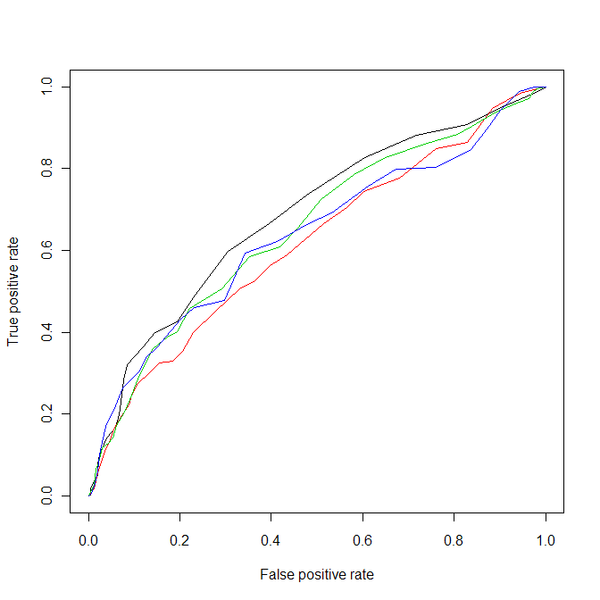

The receiver operating characteristic (ROC) Curve is a graphical plot for a binary classifier and mainly used in signal detection theory. It compares the false positive rate (fall-out) on the horizontal axis to the true positive rate (sensitivity) on the vertical axis by varying the threshold. Sometimes costs of missclassification are unknown. So, in contrast to performance measures, where you can calculate only one performance value, a ROC Curve for one classifier shows an area of performance values in dependencies to different false positve and true positive rates. Another positive aspect for his graphical plot is the fact, that it can compare the performance of an imbalanced data set with a modified version. The following functions are created by including the features of the ROCR-Package.

You can also choose between other measures for calculating the performance of the ROC Curve. Now, we can create the plot of the ROC Curve seperatively for one classifier:# Loading the pima indian diabetes data set: data(Pima.tr) # Classification task: ct <- make.task(data =Pima.tr, target = "type",positive="Yes")# Choose your lerner, e.g. lda: learner <- make.learner("classif.lda", predict.type="prob", id="lda")# Make a 10-fold stratified cross-validation: res <- make.res.desc("stratcv",iters=10)# Four measures: ms <- c("mmce","tpr","fpr","auc")# Benchmark Experiment with predictions: be <- bench.exp(tasks=ct,learners=learner,resampling=res,measures=ms,predictions=T)# Show different types of measures: be# mean.mmce 0.23551378 # mean.tpr 0.55714286 # mean.fpr 0.12857143 # mean.auc 0.83511251 # sd.mmce 0.10324046 # sd.tpr 0.22897891 # sd.fpr 0.08867950 # sd.auc 0.09578202
# Extract the predictions of the Benchmark Experiment: p <- be["prediction",task="Pima.tr"]# Convert predictions that ROCR can interprets them: p.new <- as.ROCR.preds(p) # Display the Performance for different values of the x-axis and y-axis: perf <- ROCR.performance(p.new,"tpr","fpr") # Average all ROC Curves of the 10-fold stratified cross-validation and generate the resulting plot: ROCR.plot.performance(perf, avg="threshold")